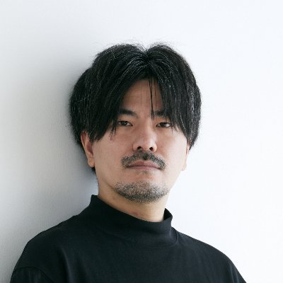

失敗談から学ぶ
教科書に載らない実体験を、そのまま終わらせず次の一手に変えます。
ABOUT / 何をする場か
教科書に載らない実体験を、そのまま終わらせず次の一手に変えます。
最新の AI ツールを、ディレクションの現場でどう使うかまで具体化します。
異なるコミュニティや立場が交わることで、新しい視点と付加価値を生みます。
VALUE / 名前に込めた意味
これまでのディレクションに、AI など新しい手札を加えていく。
ディレクション力を、コミュニティを越えてプラスしていく。
ディレクターを増やし、実践を共有できる場を広げていく。
TARGET / 向いている人
これからディレクションを学びたい人
現場での進め方をもう一段深くしたい人
自社のディレクションをアップデートしたい人
ROADMAP / 進行予定
発足の経緯を共有しながら、5/11 セミナーの構成案を公開の場で詰めます。
テーマは「リアルな失敗談」。一次情報をベースに、学びを共有します。
事務局メンバーの拡充と第2回企画へつなげながら、運営基盤を整えます。
TEAM / D+ の事務局メンバー

事務局長
Web・IT企業の採用・組織支援。3,000名の対話実績に基づく「目利き」と「仕組み化」で、人材ミスマッチを防ぎ、事業成長を裏から支えます。

BRANDING
1992年生まれ、栃木県出身。Webディレクター歴9年。ブランディング、サイト構想、ゲスト調整、クリエイティブ制作をリード。

MC / UX
Webディレクター兼UXデザイナー。Web・情報設計とUXが主戦場。「知識は足し算、アイディアは掛け算」を信条に、最良のクリエイティブを。

CASTING
合同会社ゆらり｜一般社団法人ディレクションサポート協会（DiSA）会長｜Adobe Community Expert｜まるみデザインファーム｜Webディレクターの森
LINK
日本ディレクション協会のファウンダー/代表理事。アプリ・Web制作、コミュニティ運営、SNS活用まで越境して場を広げる。
CONTACT / 次の一歩
オンラインセミナーや座談会の案内は、公開情報を順次追加していく前提で整えています。 最新の動きはプロジェクト進行に合わせて更新します。